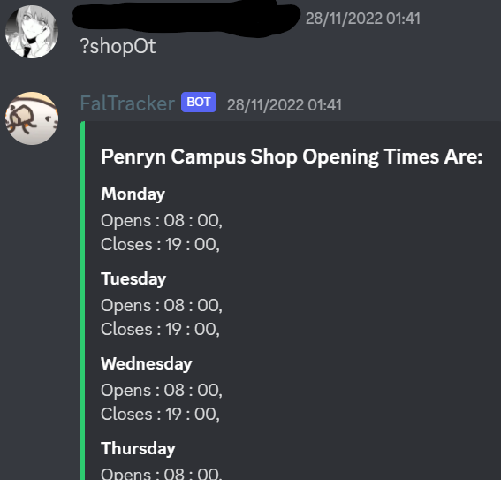

Fal Tracker

Its makes use of the Asynchronous HTTP Client/Server for [asyncio](https://docs.aiohttp.org/en/stable/glossary.html#term-asyncio) to extract the html data from a uni webpage. The text in the file is sorted and cleaned for relivance and then the needed data is fed back to the user.
Faltracker is a discord bot that is currently running on a student server for over 300 students in our deparment. Written in python, it scrapes live data from Falmouth Uni’s website to determine:
- Whether services (shops, cafes, gyms) are open or closed
- The service's opening times
- Upcomming Uni held events
- Lists of helpful uni contact infomation, such as emails and numbers
Its makes use of the Asynchronous HTTP Client/Server for [asyncio](https://docs.aiohttp.org/en/stable/glossary.html#term-asyncio) to extract the html data from a uni webpage. The text in the file is sorted and cleaned for relivance and then the needed data is fed back to the user.